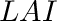

|
.
v1.2.20
|
|
.
v1.2.20
|
Projects that use the Helios API can be located in any directory, and simply need to reference the location of the source code and plug-ins. Typically the project directory contains the following files and directories (see 'samples' directory for examples):
A prototypical directory structure for a project folder is given below:
It is generally convenient to have a separate directory in which the project is built. This makes it easy to start fresh with a new build, or create multiple builds on different systems. Usually, the build directory is a subdirectory within the project directory (see 'samples' directory for examples).
Projects using the Helios API must have a file containing a main() program, and can have any number of complimentary routines and files. Generally, the file containing the main program will include the Context.h header file, and declare the Context class (see Sect. Context below).
Projects that use the Helios API are typically built using a CMakeLists.txt file. A prototypical CMakeLists.txt file used for building Helios samples and projects is given in the code sample below. Inputs for the specific case are entered in the top block of code by setting variables (see the CMake 'set' command reference). The user sets the location of the Helios base directory, the name of the executable file, any source or header files, and a list of plug-ins to use (the example below uses the 'visualizer' plug-in).
# Helios standard CMakeLists.txt file version 1.4
#-------- USER INPUTS ---------#
#provide the path to Helios base directory, either as an absolut path or a path relative to the location of this file
set( BASE_DIRECTORY "../.." )
#define the name of the executable to be created
set( EXECUTABLE_NAME "executable" )
#provide name of source file(s) (separate multiple file names with semicolon)
set( SOURCE_FILES "main.cpp" )
#specify which plug-ins to use (separate plug-in names with semicolon)
set( PLUGINS "visualizer" )
#-------- MAIN CODE (Don't Modify) ---------#
cmake_minimum_required(VERSION 2.4)
project(helios)
if ( WIN32 )
SET(CMAKE_C_COMPILER_ID "MSVC")
SET(CMAKE_CXX_COMPILER_ID "MSVC")
SET(CMAKE_CXX_FLAGS "${CMAKE_CXX_FLAGS} /std:c++latest")
else()
SET(CMAKE_C_COMPILER_ID "GNU")
SET(CMAKE_CXX_COMPILER_ID "GNU")
SET(CMAKE_CXX_FLAGS "${CMAKE_CXX_FLAGS} -std=c++11")
if( CMAKE_BUILD_TYPE STREQUAL Debug )
SET(CMAKE_C_FLAGS "${CMAKE_C_FLAGS} -g" )
SET(CMAKE_CXX_FLAGS "${CMAKE_CXX_FLAGS} -g")
endif()
endif()
if(NOT DEFINED CMAKE_SUPPRESS_DEVELOPER_WARNINGS)
set(CMAKE_SUPPRESS_DEVELOPER_WARNINGS 1 CACHE INTERNAL "No dev warnings")
endif()
set( LIBRARY_OUTPUT_PATH ${PROJECT_BINARY_DIR}/lib )
add_executable( ${EXECUTABLE_NAME} ${SOURCE_FILES} )
add_subdirectory( ${BASE_DIRECTORY}/core "lib" )
target_link_libraries( ${EXECUTABLE_NAME} helios)
LIST(LENGTH PLUGINS PLUGIN_COUNT)
message("-- Loading ${PLUGIN_COUNT} plug-ins")
foreach(PLUGIN ${PLUGINS})
message("-- loading plug-in ${PLUGIN}")
if( ${PLUGIN} STREQUAL ${EXECUTABLE_NAME} )
message( FATAL_ERROR "The executable name cannot be the same as a plugin name. Please rename your executable." )
endif()
add_subdirectory( ${BASE_DIRECTORY}/plugins/${PLUGIN} "plugins/${PLUGIN}" )
target_link_libraries( ${EXECUTABLE_NAME} ${PLUGIN} )
endforeach(PLUGIN)
include_directories( "${PLUGIN_INCLUDE_PATHS};${CMAKE_CURRENT_SOURCE_DIRECTORY}" )
To run the CMakeLists.txt file, which creates a makefile, simply run the command 'cmake', followed by the path to the CMakeLists.txt file. If, as in the examples above, you are currently in the build directory and your CMakeLists.txt file is located one directory up, the CMake build is accomplished through:
$ cmake .. The code can then be compiled by issuing the 'make' command from the build directory, which will produce an executable in the build directory.
There is a script in the main Helios directory that can quickly set up a new project called "create_project.sh". First, create a new directory where the project will exist, for example:
$ mkdir projects/myProjectTo set up the new project, run the create_project.sh script, with the input argument of the project directory:
$ ./create_project.sh projects/myProjectsThis will create the CMakeLists.txt file, a main.cpp file template, and an empty build directory.
You can also specify plug-ins as command-line arguments to the create_project.sh script, in which case the script will create a CMakeLists.txt and main.cpp file that are set up to load those plug-ins:
$ ./create_project.sh projects/myProjects radiation visualizerThe Context is a C++ class that manages data and functions associated with the Helios framework. The functions of the Context are:
In simplest terms, the Context stores information associated with geometric objects (primitives) and their corresponding data.
In order to use the Context, the following header must be included:
#include "Context.h" The context is typically created within the main function:
#include "Context.h"
void main(){
Context context;
}
The Context is usually passed to plugins (see Writing Plugins), which gives them access to geometry and data.
There are several vector types commonly used by the Context and other plugins (see Writing Plugins). These are C++ structures with at least two member variables. Helios vector types are defined by including the header file:
#include "helios_vector_types.h" Note that this header is included within the 'Context.h' header, so it is not necessary to include both.
Available vector types are detailed below.
| Type | Description | Data Fields | Member Functions | Creation Function |
|---|---|---|---|---|
| vec2 | 2D vector of floats | x, y | normalize(), magnitude() | make_vec2() |
| vec3 | 3D vector of floats | x, y, z | normalize(), magnitude() | make_vec3() |
| vec4 | 4D vector of floats | x, y, z, w | none | make_vec4() |
| int2 | 2D vector of integers | x, y | none | make_int2() |
| int3 | 3D vector of integers | x, y, z | none | make_int3() |
| int4 | 4D vector of integers | x, y, z, w | none | make_int4() |
| RGBcolor | red-green-blue color code | r, g, b | scale() | make_RGBcolor() |
| RGBAcolor | red-green-blue-alpha color code | r, g, b, a | scale(), clamp() | make_RGBAcolor() |
| Time | Time of day | second, minute, hour | none | make_Time() |
| Date | Calendar date (MM,DD,YYYY) | day, month, year | JulianDay() | make_Date() |
Vector types can be initialized by using their 'make_*()' function. For example, 'i2=make_int2(1,2);' creates an int2 with members 'i2.x -> 1' and 'i2.y -> 2'.
There are several predefined RGB color vectors (see RGBcolor) that can be used, which are tabulated below:
| Color | Code | Sample |
|---|---|---|
| RGB::black | (0,0,0) | |
| RGB::white | (1,1,1) | |
| RGB::red | (1,0,0) | |
| RGB::blue | (0,0,1) | |
| RGB::green | (0,0.6,0) | |
| RGB::cyan | (0,1,1) | |
| RGB::magenta | (1,0,1) | |
| RGB::yellow | (1,1,0) | |
| RGB::orange | (1,0.5,0) | |
| RGB::violet | (0.5,0,0.5) | |
| RGB::lime | (0,1,0) | |
| RGB::silver | (0.75,0.75,0.75) | |
| RGB::gray | (0.5,0.5,0.5) | |
| RGB::navy | (0,0,0.5) | |
| RGB::brown | (0.55,0.27,0.075) | |
| RGB::khaki | (0.94,0.92,0.55) | |
| RGB::greenyellow | (0.678,1,0.184) | |
| RGB::forestgreen | (0.133,0.545,0.133) | |
| RGB::yellowgreen | (0.6,0.8,0.2) | |
| RGB::goldenrod | (0.855,0.647,0.126) |
Note that the above colors can be directly passed to make_RGBAcolor to specify an alpha (transparency) value:
RGBAcolor red_trans = make_RGBAcolor( RGB::red, 0.5 );Helios uses a right-handed Cartesian coordinate system. (x,y,z) coordinates are typically specified using the 'vec3' data structure (see Vector Types).
Rotations are typically specified using spherical angles (see Vector Types). A rotation of the elevation angle  rotates the object about its y-axis. A rotation of the azimuthal angle
rotates the object about its y-axis. A rotation of the azimuthal angle  rotates the object clockwise about its z-axis.
rotates the object clockwise about its z-axis.
When compass directions are used, +y corresponds to North, and +x corresponds East. The azimuthal angle is measured clockwise from North.


The Helios framework is centered around geometric objects called 'primitives'. Primitive elements build up the geometry of the domain, and typically store the data that couples models. For example, each primitive may have an associated surface temperature value that is updated or used by several different models.
All primitives inherit the class 'Primitive', which give them common properties and functions. The available geometric primitive types are detailed below. Each primitive type has an enumeration that can be used in the code to reference each primitive type.
| Primitive | Description | Enumeration |
|---|---|---|
| Patch | Rectangular polygon with coplanar vertices. A patch is specified by the (x,y,z) coordinate of its center and by the lengths of its sides in the x- and y-directions. The default orientation of a patch is horizontal (i.e., it's normal is in the +z direction). | PRIMITIVE_TYPE_PATCH |
| Triangle | Triangular polygon specified by its three vertices. | PRIMITIVE_TYPE_TRIANGLE |
| Voxel | Parallelpiped or rectangular prism. A voxel is specified by the (x,y,z) coordinate of its center and by the lenghts of its sides in the x-, y-, and z-directions. The default orientation of a voxel is axis-aligned. | PRIMITIVE_TYPE_VOXEL |
Primitives are referenced by their 'universal uinique identifier' or UUID. When a function is called to add a primitive to the context, a UUID is returned that can be used later to reference the primitive. Objects can be formed simply by storing a group of UUIDs corresponding to the primitives that make up the object.
Each primitive type has a different function that is used to add it to the Context, which are detailed in the table below.
Patches are added by specifying the (x,y,z) coordinate of its center, the lengths of its sides in the x- and y-directions, and optionally its spherical rotation (see Coordinate System) and r-g-b color. The following is an example of using the 'addPatch' function to add a simple patch:
#include "Context.h"
using namespace helios;
int main( void ){
Context context;
vec3 center = make_vec3(0,0,1);
vec2 size = make_vec2(1,1);
uint UUID; //universal unique identifier
UUID = context.addPatch( center, size );
}This will add the Patch shown below, with the default orientation of horizontal. (Note that the addition of the checkerboard ground and the 'Visualizer' plugin is needed to replicate this image, which is not shown in the example code.)

The patch can also be rotated by adding the optional SphericalCoord argument:
vec3 center = make_vec3(0,0,1);
vec2 size = make_vec2(1,1);
SphericalCoord rotation = make_SphericalCoord(0.25*M_PI,0.5*M_PI);
context.addPatch( center, size, rotation );This will first rotate the patch by 0.25  rad about the x-axis such that its normal is pointing toward the +y direction, THEN it will apply a clockwise azimuthal rotation of 0.5 rad such that its normal is pointing in the +x direction (which will be its final orientation). Note that in order to have more control over rotations, it is recommended to use the Primitive::rotate() function (see "Primitive Transformations" section below).
Triangles are added by specifying the (x,y,z) coordinates of the triangle's three vertices, and optionally its r-g-b color. The following is an example of using the 'addTriangle()' function to add a simple triangle:
#include "Context.h"
using namespace helios;
int main( void ){
Context context;
vec3 v0 = make_vec3(-0.5,-0.5,1);
vec3 v1 = make_vec3(0.5,-0.5,1);
vec3 v2 = make_vec3(0,0.5,1);
uint UUID; //universal unique identifier
UUID = context.addTriangle( v0, v1, v2, RGB::red );
}This will add the Triangle shown below. (Note that the addition of the checkerboard ground and the 'Visualizer' plugin is needed to replicate this image, which is not shown in the example code.)

An important note for triangles is that the normal direction of the triangle follows the right-hand rule: use your right hand to connect each of the vertices in the order specified, and your thumb will point in the normal direction. This is illustrated in the figure below.

Voxels are added by specifying the (x,y,z) coordinate of its center, the lengths of its sides in the x-, y-, and z-directions, and optionally its spherical rotation (see Coordinate System) and r-g-b color. The following is an example of using the 'addVoxel()' function to add a simple voxel:
#include "Context.h"
using namespace helios;
int main( void ){
Context context;
vec3 center = make_vec3(0,0,1);
vec3 size = make_vec3(1,1,1);
uint UUID; //universal unique identifier
UUID = context.addVoxel( center, size, RGB::red );
}This will add the Voxel shown below, with the default orientation of horizontal. (Note that the addition of the checkerboard ground and the 'visualizer' plugin is needed to replicate this image, which is not shown in the example code.)

The voxel can also be rotated by adding the optional SphericalCoord argument:
vec3 center = make_vec3(0,0,1);
vec3 size = make_vec3(1,1,1);
rotation = 0.25*M_PI;
context.addVoxel( center, size, rotation, RGB::red );After primitives have been added to the Context, their position, size, and orientation can be further modified through transformations.
All primitives have member functions Primitive::scale(), Primitive::translate(), and Primitive::rotate() which modify the size, position, and orientation of the primitive, respectively. The Primitive::scale() function takes a vec3 that denotes a scaling factor to apply in each Cartesian direction (x,y,z). The Primitive::translate() function moves the primitive based on values provided by a vec3 that specifies the distance to translate in the x-, y-, and z-directions.
The Primitive::rotate() function rotates the primitive about an axis through and angle specified in radians. To rotate about one of the x-, y-, or z-axes, the function can be supplied a string of 'x', 'y', or 'z', respectively. The primitive can also be rotated about an arbitrary axis described by a unit vector argument.
It is important to note that the order that transformations are applied is important. Each transformation is applied based on the primitives current state. Rotating a primitive centered about the origin will cause the primitive to rotate about its own center. However, if a primitive is first translated then rotated, the primitive will be rotated about the origin, which does not necessarily coincide with the primitive's center if it has been translated.
All primitives have a common set of data that can be accessed by the same set of functions. These functions are accessed through a pointer to the primitive:
uint UUID; //universal unique identifier
UUID = context.addVoxel( center, size, RGB::red );
Primitive* prim = context.getPrimitivePointer(UUID);
float area = prim->getArea();or a shorthand would be
uint UUID; //universal unique identifier
float area = context.getPrimitivePointer(UUID)->getArea();The table below gives a list of all availalbe primitive functions.
| Property | Getter Function |
|---|---|
| UUID | getUUID() |
| Primitive Type | getType() |
| Surface Area | getArea() |
| Normal Vector | getNormal() |
| Affine Transformation Matrix | getTransformationMatrix() |
| Vertex Coordinates (x,y,z) | getVertices() |
| Diffuse R-G-B color code | getColor() |
| Diffuse R-G-B-A color code | getColorRGBA() |
| Check whether the primitive has a texture map | hasTexture() |
| Get texture map data | getTexture() |
| Name of texture map file | getTextureFile() |
| Get the (u,v) coordinates of the texture mapping | getTextureUV() |
Some primitives have special functions specific to that type of primitive. For example, one may want to query the volume of a Voxel. These special functions are tabulated below. In order to use the special functions, you must get a pointer to the primitive type (e.g., Patch, Triangle, etc.) not the primitive. This is done using the 'get[*]Pointer' functions (e.g., getPatchPointer()). The example below illustrates how to get a pointer to a Patch, which is then used to query its size.
| Primitive Type | Pointer Getter Function | Special Function |
|---|---|---|
| Patch | getPatchPointer() | |
| Triangle | getTrianglePointer() | |
| Voxel | getVoxelPointer() |
#include "Context.h"
using namespace helios;
int main( void ){
Primitives can be transformed after they are added to the Context, which includes translation, rotation, and scaling. The order in which the transformations are applied is important! In general, you'll usually want to scale the primitive first, then rotate, then translate. If, for example, you rotate the primitive, then scale it, it will scale the rotated primitive in the (x,y,z) directions which is not the same as scaling the primitive pre-rotation.
A transformation can either be applied by calling the function from the primitive's pointer, or directly from the Context if you have a single or vector of UUIDs. These functions are tabulated below.
Calling from a pointer to a primitive:
| Transformation | Function |
|---|---|
| Translate in x, y, or z direction | translate( vec3 shift ) |
| Rotate about x, y, or z axis | rotate( float rot, const char* axis ) |
| Rotate about arbitrary axis | rotate( float rot, vec3 axis ) |
| Scale in x, y, or z direction | scale( vec3 S ) |
Below is a code example of applying a transformation using a pointer to the primitive:
#include "Context.h"
using namespace helios;
int main( void ){
Calling directly from the Context using a single UUID:
| Transformation | Function |
|---|---|
| Translate in x, y, or z direction | translatePrimitive( uint UUID, vec3 shift ) |
| Rotate about x, y, or z axis | rotatePrimitive( uint UUID, float rot, const char* axis ) |
| Rotate about arbitrary axis | rotatePrimitive( uint UUID, float rot, vec3 axis ) |
| Scale in x, y, or z direction | scalePrimitive( uint UUID, vec3 S ) |
Below is a code example of applying a transformation from the Context using a single primitive UUID:
#include "Context.h"
using namespace helios;
int main( void ){
This can also be accomplished by passing a vector of UUIDs to the transformation function to apply the transformations to many primitives at once using these functions:
| Transformation | Function |
|---|---|
| Translate in x, y, or z direction | translatePrimitive( vector<uint> UUIDs, vec3 shift ) |
| Rotate about x, y, or z axis | rotatePrimitive( vector<uint> UUIDs, float rot, const char* axis ) |
| Rotate about arbitrary axis | rotatePrimitive( vector<uint> UUIDs, float rot, vec3 axis ) |
| Scale in x, y, or z direction | scalePrimitive( vector<uint> UUIDs, vec3 S ) |
Images can be overlaid on patches and triangles through a process called texture mapping. There are typically two reasons for doing this. One is simply for visualization purposes, as it easily allows for complex coloring of a surface by coloring a surface according to an image. The other is to create a more complex shape by removing a portion of the primitive surface according to the transparency channel of an image. Each of these cases are described in detail below.
Patches: To color a Patch based on an image, simply pass the path to a PNG or JPEG image to the appropriate argument of the addPatch() command. Note that the path should either be absolute, or relative to the directory where the executable will be run (typically the ‘build’ directory).
vec3 center = make_vec3(0,0,1);
vec2 size = make_vec2(2.5,1);
SphericalCoord rotation = make_SphericalCoord(0,0);
context.addPatch( center, size, rotation, "PSL_logo_white.png");

By default, the image is stretched to fill the entire surface of the patch. Alternatively, custom mapping coordinates can be supplied.
Patches:

Triangles:

If the image provided for texture mapping has a transparency channel, the portion of the primitive that is transparent will automatically be removed, and the rest of the non-transparent portion of the primitive will be colored according to the image. Note that only PNG images are supported, since JPEG images do not have transparency. An example is given below.
#include "Context.h"
using namespace helios;
int main( void ){

#include "Context.h"
using namespace helios;
int main( void ){
The Context has functions to rapidly generate various shapes, which consist of many primitives. These functions simply add the primitives needed to make the specified geometry, and return a vector of UUIDs corresponding to each of the primitives. The important distinction between these functions and those to add "Objects" (described below) is that Objects retain information about the overall 3D object such as the radius of the sphere.
Functions for adding compound geometry are listed below.
| Geometry | Description | Adder function(s) | Example |
|---|---|---|---|
| Tile | Patch subdivided into uniform grid of sub-patches. |
| 
|
| Sphere | Spherical object tesselated with Triangle primitives. |
| 
|
| Tube | Cylindrical tube object tesselated with Triangle primitives. Follows a specified path and can change radius along its length. |
| 
|
| Box | Rectangular prism object tesselated with Patch primitives. |
| 
|
| Disk | Ellipsoidal disk object tesselated with Triangle primitives. |
| 
|
Objects are geometries consisting of many primitive elements. The critical difference between "Objects" and the compound objects described above is that Objects retain information about the overall geometry such as length, radius, etc., and have many sub-functions for manipulating them and assigning data. This is often useful when you want to know information about the overall object or want to manipulate the entire object in unison.
Functions for adding objects return a uint that serves as a unique identifier for the object, which can be used for later reference and manipulation. Functions for adding objects are listed in the table below.
| Object | Description | Adder function(s) | Example |
|---|---|---|---|
| Tile | Patch subdivided into uniform grid of sub-patches. |
|
|
| Sphere | Spherical object tesselated with Triangle primitives. |
|
|
| Tube | Cylindrical tube object tesselated with Triangle primitives. Follows a specified path and can change radius along its length. |
|
|
| Box | Rectangular prism object tesselated with Patch primitives. |
|
|
| Disk | Ellipsoidal disk object tesselated with Triangle primitives. |
|
|
| Cone | Tapered cylinder/cone object tesselated with triangles. |
| 
|
Similar to individual primitives, objects have functions to perform transformations on the entire object in unison. These functions are member functions of the helios::CompoundObject class. As with primitives, you can use the identifier to an object to get its pointer, from which you can access member functions.
uint objID; //unique identifier to object
objID = context.addTileObject( center, size, rotation, make_int2(2,2) );
CompoundObject* object = context.getObjectPointer(objID);
float area = object->getArea();or a shorthand would be
uint objID; //object identifier
float area = context.getObjectPointer(objID)->getArea();The table below gives a list of availalbe Object functions.
| Property | Getter Function |
|---|---|
| Object ID | getObjectID() |
| Object Type | getObjectType() |
| Primitive Count | getPrimitiveCount() |
| Member Primitive UUIDs | getPrimitiveUUIDs() |
| Member Primitive Check | doesObjectContainPrimitive() |
| Object Center | getObjectCenter() |
| Surface Area | getArea() |
| Diffuse R-G-B color code | getColor() |
| Diffuse R-G-B color code | getRGBColor() |
| Diffuse R-G-B-A color code | getRGBAColor() |
| Override Texture | overrideTextureColor() |
| Use Texture | useTextureColor() |
Objects can be translated and rotated using functions similar to that of primitives:
| Transformation | Function |
|---|---|
| Translate in x, y, or z direction | translate( vec3 shift ) |
| Rotate about x, y, or z axis | rotate( float rot, const char* axis ) |
| Rotate about arbitrary axis | rotate( float rot, vec3 axis ) |
Some objects have special functions specific to that type of object, which are listed below. In order to access these functions, you need to get a pointer to that type of object using thhe appropriate get[*]ObjectPointer() function.
| Object Type | Pointer Getter Function | Special Function |
|---|---|---|
| Tile | getTileObjectPointer() | |
| Sphere | getSphereObjectPointer() | |
| Tube | getTubeObjectPointer() | |
| Box | getBoxObjectPointer() | |
| Disk | getDiskObjectPointer() | |
| Cone | getConeObjectPointer() |
Data structures that are moved in and out of plugins are managed by the Context. There are two types of Context data structures that serve different purposes:
Implementation of data structure usage is detailed for each type of structure below.
Only certain data types are supported for primitive and global data (below), which are referenced using their enumeration type.
| Data type | Enumeration (HeliosDataType) |
|---|---|
| int | HELIOS_TYPE_INT |
| uint | HELIOS_TYPE_UINT |
| float | HELIOS_TYPE_FLOAT |
| double | HELIOS_TYPE_DOUBLE |
| vec2 | HELIOS_TYPE_VEC2 |
| vec3 | HELIOS_TYPE_VEC3 |
| vec4 | HELIOS_TYPE_VEC4 |
| int2 | HELIOS_TYPE_INT2 |
| int3 | HELIOS_TYPE_INT3 |
| int4 | HELIOS_TYPE_INT4 |
| std::string | HELIOS_TYPE_STRING |
Primitive data values can be scalar or a one-dimensional array of values.
Primitive data is set for a given primitive via the Context using the setPrimitiveData() function. Example use of this function for scalar data is given below.
#include "Context.h"
using namespace helios;
int main( void ){
Context context;
uint UUID = context.addPatch( center, size, RGB::red );
float eps = 0.9;
context.setPrimitiveData(UUID,"emissivity",eps);
}Alternatively, primitive data can be set from a pointer to the primitive using setPrimitiveData():
Primitive* prim = context->getPrimitivePointer(UUID);
float eps = 0.9;
prim.setPrimitiveData("emissivity",eps);Reference getPrimitivePointer() for further information on how to get a pointer to primitives.
There are multiple ways of setting vector primitive data. One method uses STL vectors to pass the data to the setPrimitiveData(), and another is accomplished using a pointer to a standard C vector. Both of these equivalent methods are illustrated below.
#include "Context.h"
using namespace helios;
int main( void ){
Context context;
vec3 center(0,0,0);
vec2 size(1,1);
uint UUID = context.addPatch( center, size );
std::vector<float> A;
A.push_back(2.3);
A.push_back(9.2);
context.setPrimitiveData(UUID,"somedataA",HELIOS_TYPE_FLOAT,A.size(),&A[0]);
float B[2];
B[0] = 2.3;
B[1] = 9.2;
context.setPrimitiveData(UUID,"somedataB",HELIOS_TYPE_FLOAT,2,&B[0]);
}If primitive data is a scalar value, it can be retrieved for a given primitive via the Context using the getPrimitiveData function:
#include "Context.h"
using namespace helios;
int main( void ){
Context context;
vec3 center(0,0,0);
vec2 size(1,1);
uint UUID = context.addPatch( center, size );
float eps = 0.9;
context.setPrimitiveData(UUID,"emissivity",eps);
float emissivity;
context.getPrimitiveData(UUID,"emissivity",emissivity);
}In the above example, the value of 'emissivity' is 0.9.
For a vector of primitive data, use the getPrimitiveData_v function. Note that the 'getPrimitiveData_v' function can always be used regardless of whether the data is scalar or vector valued. If the data is scalar and 'getPrimitiveData_v' is used, the function will simply return a vector structure of length 1.
It is often necessary to query information about primitive data. The following table lists functions used to query primitive data information. Note that the query functions are called through a pointer to the primitive, not directly from the Context (see example below).
| Function | Description |
|---|---|
| doesPrimitiveDataExist( const char* label ) | Check whether primitive data named 'label' exists for the primitive. |
| getPrimitiveDataType( const char* label ) | Get the helios::HeliosDataType for the primitive. |
| getPrimitiveDataSize( const char* label ) | Get the length/size of the primitive data named 'label'. |
#include "Context.h"
using namespace helios;
int main( void ){
Context context;
vec3 center(0,0,0);
vec2 size(1,1);
uint UUID = context.addPatch( center, size );
float eps = 0.9;
context.setPrimitiveData(UUID, "emissivity", eps);
Primitive* prim context.getPrimitive(UUID);
if( prim->doesPrimitiveDataExist("emissivity") ){
HeliosDataType type = prim->getPrimitiveDataType("emissivity");
uint L = prim->getPrimitiveDataSize("emissivity");
}
}Global data is similar to primitive data, except that it does not correspond to any particular primitive, rather it is a single instance of a certain data structure. The functions used to create global data within the Context are essentially the same as those used to create primitive data, except they do not take a primitive UUID as an argument (because they do not correspond to primitives).
Timeseries - or data points corresponding to discrete points in time - can be managed by the Context. This typically corresponds to data that is measured by a sensor. Timeseries data points are added to the Context by giving the value of the data point, along with Date and Time vectors. An example is given below to manualy add 15-min timeseries data to the Context.
Data in the timeseries can be accessed either via the queryTimeseriesData() function by giving the index of the data point, or by giving a date and time. To loop through all data in the timeseries, we can query the length of the timeseries and make a for-loop.
#include "Context.h"
using namespace helios;
int main( void ){
Typically, data is not entered manually, but rather through an XML file (see Reading XML Files for information).
It is often necessary to get the number of data points in a given timeseries, which can be accomplished with the command:
uint N = context.getTimeseriesLength( "temperature" );